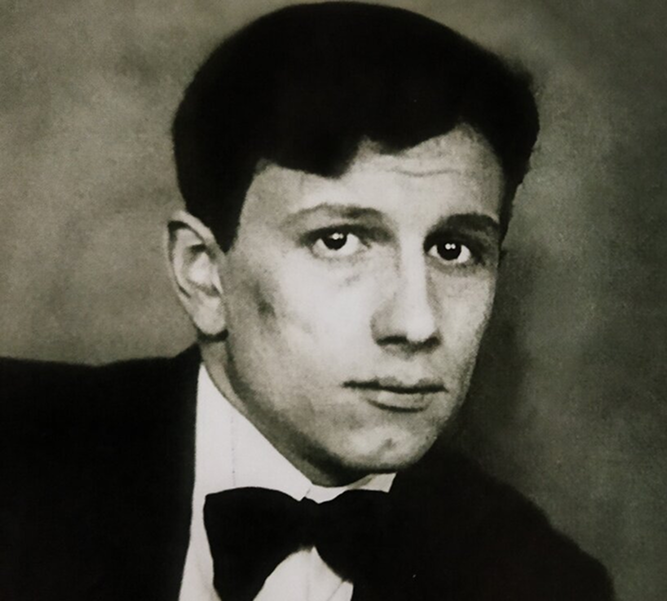

Знаменитые люди Томска
Писатели, учёные и художники, чьи жизнь и творчество связаны с городом на Томи.

Драматург
Николай Робертович Эрдман
Автор «Мандата» и «Самоубийцы», родился в Томске.
1900–1970
Николай Эрдман — выдающийся советский драматург и поэт, родившийся в Томске в семье переводчика.
Его пьесы «Мандат» и «Самоубийца» вошли в золотой фонд отечественного театра. Сатирический дар Эрдмана сочетался с тонким чувством языка и гротеска.
Томск помнит драматурга как одного из самых ярких уроженцев, чьё творчество до сих пор идёт на сценах театров Сибири и всей России.